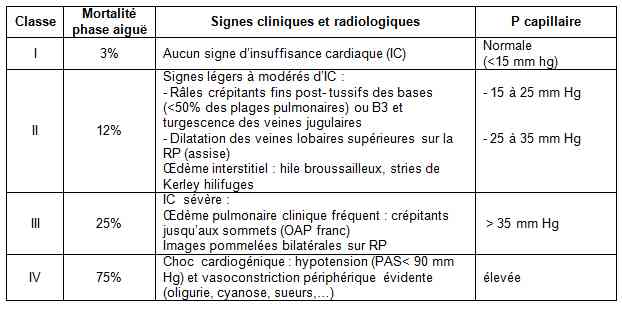
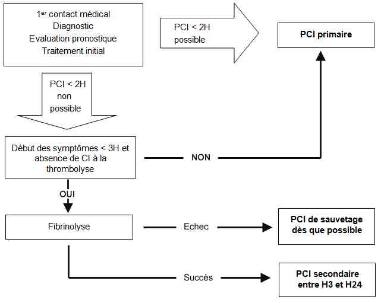

Bienvenue Sur Medical Education
Syndrome coronaire aigu avec sus décalage de ST
Spécialité : cardiologie /
Points importants
-
Douleur thoracique typique ≥ 20 min
-
Trinitro-résistante
-
Avec sus-décalage persistant du segment ST sur l'ECG
-
Equivalents : patient coronarien connu électrostimulé ou présentant un BBG récent (recherche de signe direct ++)
Présentation clinique / CIMU
SIGNES FONCTIONNELS
Présentation clinique / CIMU
SIGNES FONCTIONNELS
Généraux
- Nausées
- Sueurs
- Lipothymie
- Dyspnée
- Sensation d'oppression
Spécifiques
-
Douleur thoracique :
- rétrosternale (parfois épigastrique)
- constrictive en « étau »
- continue pendant plus de 20 min
- résistante à la trinitrine (TNT) sublinguale
-
Irradiation possible :
- à la région cervicale et la mâchoire inférieure
- au bras surtout gauche voire également au bras droit
CONTEXTE
Terrain
- Souvent homme de plus de 40 ans
Traitement usuel
- Antiagrégant plaquettaire
- Et/ou TNT spray ou transdermique
- Et/ou antihypertenseurs
- Et/ou hypolipémiants
- Et/ou insulinothérapie ou antidiabétiques oraux
- Parfois aucun traitement
Antécédents
- Cardiovasculaires (angor, IDM, stent, pontage, cardiomyopathies notamment ischémique, artérite, AVC...)
- Mais parfois sans antécédent
Facteurs de risque
- ATCD coronaires personnels ou familiaux
- Age > 40 ans
- Sexe (homme > femme)
- Tabagisme même ancien sevré
- Hypercholestérolémie
- HTA
- Diabète
- Anxiété
- Surmenage
Circonstances de survenue
- De novo, de repos, à l'effort, post-infarctus récent
Examen clinique
- Auscultation pulmonaire (recherche d'une insuffisance ventriculaire gauche : classification de KILLIP) et cardiaque (souffle, arythmie, frottement péricardique...)
- Recherche de signes d'insuffisance cardiaque droite : reflux hépato jugulaire, turgescence jugulaire, foie cardiaque
- Recherche d'une asymétrie tensionnelle, des pouls fémoraux
- Classification de Killip de l'insuffisance cardiaque à la phase aiguë de l'IDM
 _803 Tableau Classification de Killip
EXAMENS PARACLINIQUES SIMPLES
ECG 12 dérivations + V3R, V4R, V7-V9
- Avant et après TNT (si modification de la douleur)
- Comparé à ECG de référence si possible
- Sus-décalage du segment ST / ligne de base (segment PR)
- = 1 mm dans les dérivations frontales (DI, DII, DIII, aVL, aVF), précordiales gauches (V4, V5, V6) ou postérieures (V7, V8, V9)
- = 2 mm dans les dérivations précordiales droites (V1, V2, V3)
- Dans au moins 2 dérivations contiguës
- Intérêt de mesurer le sus-décalage 60 ms (1,5 mm) après le point J
- Sous-décalage du segment ST en miroir parfois associé dans d'autres dérivations
- Si ≤ 90 % , O2 masque haute concentration (MHC) 4-8 L/min
- Recherche d'une hyperglycémie potentielle (chez le diabétique) ou de découverte fortuite (liée au stress)
- Hypoglycémie concomittante très rare chez le diabétique insulino-dépendant
CIMU
- Tri 1 ou 2
Signes paracliniques
BIOLOGIQUES
Souvent inutiles à la phase aiguë (leur recherche ne doit pas retarder une reperfusion en urgence)
Enzymes cardiaques
- Troponines (surtout Ic)
- Il ne faut pas attendre le résultat des enzymes cardiaques pour confirmer le diagnostic
Glycémie
- L'hyperglycémie et le diabétique étant facteurs de complications
Créatininémie et clairance de la créatinine
- Pour adapter les posologies d'enoxaparine et prévenir les risques liés aux produits de contraste iodés de la coronarographie, si clairance de la créatinine < 30 mL/min
Autres
- TP et TCA, ionogramme sanguin, NFS
IMAGERIE
Radiographie pulmonaire de face (classification de Killip, cardiomégalie...)
Diagnostic étiologique
Le diagnostic est essentiellement ECG
- La majorité des patients ayant un sus-décalage de ST persistant sur l'ECG présenteront un IDM avec onde Q (transmural)
-
Seule une minorité de patients présenteront un IDM sans onde Q (non transmural)
Diagnostic différentiel
-
SCA non ST+
-
Dissection aortique
-
Péricardite
-
Myocardite
-
Myopéricardite
-
Angor stable
-
Anxiété
Traitement
TRAITEMENT PREHOSPITALIER / INTRAHOSPITALIER
Traitement
TRAITEMENT PREHOSPITALIER / INTRAHOSPITALIER
Discuter la stratégie de reperfusion
-
Une stratégie de reperfusion doit être SYSTEMATIQUEMENT proposée pour tous les patients présentant un SCA ST+
-
Le choix entre la thrombolyse (préhospitalière ou hospitalière) et l'angioplastie primaire (PCI) dépend de l'analyse des délais de prise en charge par rapport au début de la douleur et de transport (1er contact médical – ballon gonflé = artére ouverte)
-
Le premier contact médical est le moment où le diagnostic est posé avec certitude ; dans la grande majorité des cas, il doit correspondre au premier ECG pratiqué à domicile par une équipe médicalisée
-
Les deux stratégies n'opposent pas thrombolyse et angioplastie mais l'association thrombolyse-PCI à distance à la PCI seule ; un malade fibrinolysé en intrahospitalier dans un hôpital ne disposant pas du plateau technique interventionnel (« Non PCI-capable hospital »), doit ensuite être transféré sans délai pour bénéficier d'une coronarographie dans les 3 à 24 heures
-
L'angioplastie primaire est privilégiée chaque fois qu'elle est réalisable dans les 2 heures (120 min) suivant le premier contact médical ; ce délai sera réduit à 90 minutes en cas de mauvaise tolérance clinique (défaillance cardiaque, trouble rythmique péjoratif, choc cardiogénique) ou chez un sujet jeune ayant peu de risque hémorragique et présentant un infarctus antérieur étendu, pris en charge précocement (douleur < 2h), la fibrinolyse devenant alors prioritaire pour désobstruer la coronaire au plus vite
-
Selon les différents registres français il est communément admis que le délai médian « entrée en salle de cathétérisme – ballon gonflé = artère ouverte » est de 30min ; ce qui permet de déduire le délai « premier contact médical- salle de cathétérisme » à 90 min pour une utilisation plus pratique en pré-hospitalier
Angioplastie primaire : indications
- Délai 1er contact médical - ballon gonflé = artère ouverte < 120 min
- S'il existe une contre-indication à la thrombolyse
- Choc cardiogénique (sauf si délai domicile - ballon gonflé > 90 min, privilégier thrombolyse)
- Infarctus du VD avec signes cliniques évidents
- A privilégier si ATCD de pontage aortocoronarien
Particularités chez le patient > 75 ans
-
Une stratégie de reperfusion doit être SYSTEMATIQUEMENT proposée :
- entre 75 - 80 ans, le choix entre la thrombolyse préhospitalière ou l'angioplastie primaire se fait de la même façon qu'avant 75 ans
- au-delà de 80 ans, l'angioplastie primaire réalisée dans un délai compatible, au mieux discuté au cas par cas entre le médecin SMUR, le régulateur et le cardiologue, doit être privilégiée en raison du risque hémorragique induit par la thrombolyse majoré à cet âge
MEDICAMENTS
Voie veineuse périphérique (EN EVITANT LE POIGNET DROIT si une angioplastie primaire est envisagée)
Aspirine 250 mg IVD
Isosorbide dinitrate
- Uniquement pour contrôle HTA ou OAP (contre-indiqué si PAS < 100 mmHg)
- 2 à 3 mg IVD jusqu'à normalisation tensionnelle
- Puis éventuellement 1-6 mg/h IVSE
Morphine (titration) si douleur avec objectif EVA ou EN = 3
Clopidogrel
-
300 mg per os si thrombolyse, 1 cp 75 mg si > 75 ans
-
600 mg per os si angioplastie primaire quelque soit l'âge ( selon les procedures locales la dose de charge peut être augmentée à 900mg)
- Uniquement si poids > à 60 kg, pas d’antécédent d’AVC ou AIT, et âge > 75 ans
- Contre indiqué si stratégie de thrombolyse
- 60 mg (6 cp à 10 mg) per os en dose de charge
Héparine non fractionnée (HNF)
- IVD 60 UI /kg (max 4 000 UI)
- Puis 12 UI /kg /h (max 100 UI /h) IVSE (25 000 UI dans 50 mL de NaCl 0,9%)
Ou Héparine de bas poids moléculaire (HBPM)
- Enoxaparine : 30 mg en IVD
- Puis 1 mg/kg en SC (0,75 mg/kg si > 75 ans ou insuffisance rénale sans bolus IVD)
Thrombolyse
-
Ténecteplase 1 bolus IVD fonction du poids corporel du patient :
- < 60 kg : 6 000 U ou 30 mg (volume de la solution reconstituée : 6 mL)
- 60 ≤ P < 70 kg : 7 000 U ou 35 mg (volume de la solution reconstituée : 7 mL)
- 70 ≤ P < 80 : 8 000 U ou 40 mg (volume de la solution reconstituée : 8 mL)
- 80 ≤ P < 90 kg : 9 000 U ou 45 mg (volume de la solution reconstituée : 9 mL)
- > 90 kg : 10 000 U ou 50 mg (volume de la solution reconstituée : 10 mL)
-
Contre-indications :
-
Formelles :
- AVC (ischémique < 6 mois)
- néoplasie intracrânienne
- traumatisme, chirurgie, traumatisme crânien majeur < 3 sem
- saignement gastro-intestinal < 1 mois
- traitement AVK
- grossesse connue, post-partum < 1 sem
- atteinte hépatique sévère
- ponction artérielle < 48 h non compressible
-
Relatives :
- HTA non contrôlée > 180 / 110 mmHg
- biopsie, injection IM, MCE prolongé et / ou traumatique
-
Formelles :
Atenolol
- ½ amp (2,5 mg) ou 1 amp (5 mg) en IVL
- Seulement si HTA et/ou troubles du rythme ventriculaire (attention aux CI)
Inhibiteurs de la glycoprotéine IIb/IIIa (Anti GPIIb/IIIa)
-
A ne faire en amont de la procédure d'angioplastie primaire que s'il existe un protocole local avec les cardiologues interventionnels :
-
abciximab :
- 0,25 mg/kg IVD puis
- IVSE (0,125 µg/kg/min)
- avec un maxi de 10 µg/min pendant 12h
-
ou tirofiban :
- 0,4 µg/kg/min IVSE pendant 30 min puis
- IVSE 0,1 µg/kg/min
-
ou eptifibatide :
- 180 µg/kg IVD puis
- IVSE 2 µg/kg/min
-
abciximab :
Surveillance
CLINIQUE
-
Scope
-
Douleur (EN ou EVA)
-
PA, FC, FR, SpO2
PARACLINIQUE
-
Electrocardioscopique, défibrillateur à proximité :
-
signes de reperfusion :
-
rythme idioventriculaire accéléré (RIVA)
-
régression partielle ou totale du sus décalage du segment ST
Devenir / orientation
CRITERES D'ADMISSION
-
signes de reperfusion :
- rythme idioventriculaire accéléré (RIVA)
- régression partielle ou totale du sus décalage du segment ST
Devenir / orientation
CRITERES D'ADMISSION
Admission directe en salle de cathétérisme
- Pour angioplastie (PCI) primaire
Admission rapide en USIC avec cardiologie interventionnelle
- Angioplastie de sauvetage en cas d'échec de la thrombolyse (à 90 min de l'injection) : persistance de la douleur et du sus-décalage de ST (> à 50% du sus décalage initial)
Pas de surveillance en service d'urgence
- Sauf si attente d'un transfert secondaire SMUR rapide vers un service de cardiologie interventionnelle
Mécanisme / description
METABOLISME
-
Manifestation clinique d'une rupture ou d'une érosion de la plaque artérielle coronaire, responsable d'une thrombose cyclique ou d'une subocclusion de la coronaire, plus ou moins associée à des phénomènes d'embolisation distale
-
L'obstruction est provoquée par un caillot le plus souvent fibrino-cruorique développé à la suite de la fissuration de cette plaque d'athérome qui rétrécissait de manière plus ou moins importante la lumière artérielle
-
L'agrégation plaquettaire déclenchée par la rupture de la plaque provoque la mise en jeu de la cascade pro-coagulante à l'origine de la formation du thrombus
-
Lorsque les processus physiologiques de fibrinolyse sont débordés, le caillot devient totalement occlusif, provoquant la nécrose de la région du myocarde normalement vascularisée par l'artère en cause
-
La libération enzymatique ou de protéines de structure (troponine) témoigne de signes de mort cellulaire
-
Les conséquences immédiates sont :
-
hémodynamiques avec risque de collapsus cardio-vasculaire, choc cardiogénique
-
rythmiques avec risques de troubles graves du rythme ventriculaire
-
mécaniques avec risques de rupture cardiaque, CIV, IM, ischémique ou par rupture de pilier
-
Le risque de mort subite est particulièrement important lors des premières heures mais persiste également par la suite
-
Les processus de remodelage ventriculaires vont contribuer à favoriser la dysfonction cardiaque, déjà en rapport avec le volume de myocarde nécrosé
PHARMACODYNAMIE
- hémodynamiques avec risque de collapsus cardio-vasculaire, choc cardiogénique
- rythmiques avec risques de troubles graves du rythme ventriculaire
- mécaniques avec risques de rupture cardiaque, CIV, IM, ischémique ou par rupture de pilier
Anticoagulants
- Héparine et HBPM limitent l'extension du thrombus et favorisent les mécanismes de thrombolyse physiologique lorsqu'elles sont administrées seules
- Associés systématiquement aux thérapeutiques de revascularisation (angioplastie et Stent) préviennent la reconstitution du thrombus
Antiagrégants plaquettaires
- Aspirine : réduit la mortalité à la phase aiguë
- Clopidogrel : facilite la lyse du thrombus et le geste d'angioplastie si il est administré en dose de charge
- AntiGPIIb/IIIa : ont pour rôle de limiter l'activation et l'agrégation plaquettaire en bloquant la voie finale de l'agrégation et la voie extrinsèque de la coagulation
Bêtabloquants
- Leur administration n'est pas préconisée de façon systématique en amont des services de cardiologie, notamment en préhospitalier, le risque de choc cardiogénique étant augmenté
- Leur intérêt se situe dans les suites d'un SCA en bloquant l'activité du système sympathique : diminution de la consommation en O2 du myocarde, réduction de la tachycardie, des conditions de charges et de l'inotropisme, de l'ischémie sous endocardique et augmentation du calcium intracellulaire, sources de troubles du rythme et/ou de mort subite
Atropine
- Traitement efficace du choc vagal ou des bradycardies par bloc sino-auriculaire ou paralysie sinusale fréquents au cours des occlusions coronaires droites
Morphine
- Ne pas hésiter à l'utiliser, la douleur augmentant la consommation d'O2
Algorithme
-
Algorithme SCA ST+
 _805 Algorithme Algorithme : SCA ST+
Bibliographie
-
Danchin N, Coste P, Ferrière J et coll. Comparision of thrombolysis followed by broad use of percutaneous coronary intervention with primary percutaneous coronary intervention for ST-segment-elevation acute myocardial infarction: data from the French Registry on Acute ST-Elevation Myocardial Infarction (Fast MI). Circulation 2008;118:268-276
-
Steg PG, Bonnefoy E, Chabaud S and coll. Impact of time to treatment on mortality after pre-hospital fibrinolisys or primary angioplasty: data from the CAPTIM randomized clinical trial. Circulation 2003;108:2851-2856
-
The Task force members of ESC. Management of acute myocardical infarction in patients presenting with persistent ST-segment elevation. European Heart Journal 2008;29:2909-2945
-
The Task Force on Myocardial Revascularization of the European Society of Cardiology (ESC) and the European Association for Cardio-Thoracic Surgery (EACTS) European Heart Journal 2010 31, 2501–2555
-
Conférence de consensus: prise en charge de l'infarctus du myocarde à la phase aiguë en dehors des services de cardiologie, 23 novembre 2006- Paris. HAS, SFMU samu de France, SFC
-
Jan Francois, Thérapeutiques en cardiologie, éditions Masson
-
Référentiels 2008 du réseau de cardiologie d'urgence, RESCUe, http : //rescue.univ-lyon1.fr
-
Dubien PY, Gallon M, Lourcy YF : protocoles thérapeutiques SAMU de Lyon, 2e version , 2008
-
Andre- fouet x, Bonnefoy E, Angoulvant D, Ginon I, Ovize M, Touboul P classification de killip http://spiral.univ-lyon.;fr/polycops/cardiologie/cardiologie-8html
Auteur(s) : Olivier CAPEL, Pierre-Yves DUBIEN